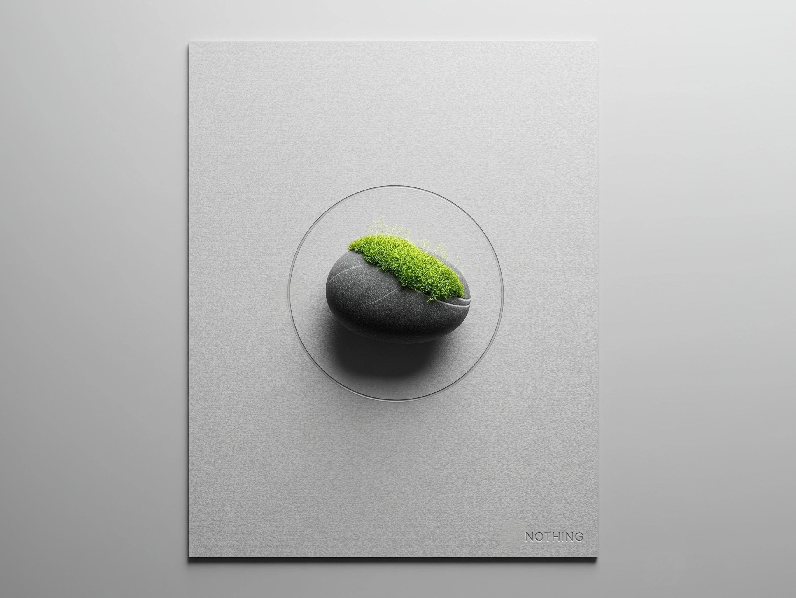
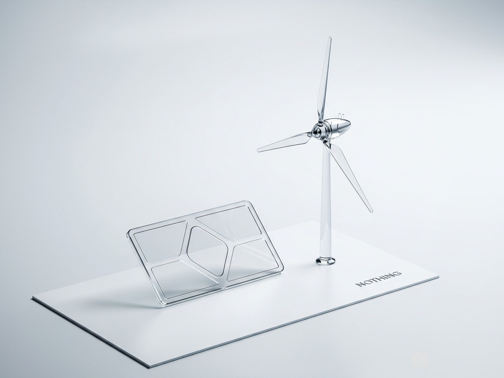

Scarica il report ufficiale - 2024
📥 Clicca qui per scaricare il PDFStrategie 2024 per l'Economia Circolare, la Decarbonizzazione e una Filiera Responsabile
Il documento si concentra su diverse aree chiave, tra cui la circolarità dei materiali, l'azione per il clima e la trasparenza delle emissioni di carbonio.Vengono anche discussi l'utilizzo di imballaggi a basso impatto, l'adozione di una chimica più ecologica e la costruzione di una catena di approvvigionamento sostenibile. 
Riutilizzo... Riduzione...
Riutilizzo di materiali riciclati e riduzione di emissioni di carbonio.
Scarica il report ufficiale - 2023
📥 Clicca qui per scaricare il PDFL'Impegno sul carbonio, l'eliminazione della plastica e strategie del 2023
l'impegno dell'azienda a creare prodotti con un impatto zero, utilizzando materiali riciclati e bio-based. Evidenzia i progressi raggiunti nel 2023, inclusa la significativa riduzione dell'impronta di carbonio del Phone (2) e l'eliminazione della plastica dagli imballaggi.Inoltre, il testo illustra le strategie e le soluzioni adottate dall'azienda, come la tracciabilità dei minerali e l'impiego di energia rinnovabile.
Impegno...
Impegno costante nella riduzione dell'impatto ambientale.
Scarica il report ufficiale - 2022
📥 Clicca qui per scaricare il PDFRiutilizzo dei materiali chimica ecologica
Nothing mira a utilizzare materiali riciclati o rinnovabili per i propri prodotti e imballaggi, oltre a ridurre le emissioni di carbonio e promuovere una chimica più ecologica.Il documento sottolinea l'importanza di una catena di approvvigionamento sostenibile, la trasparenza delle emissioni e l'estensione della vita utile dei prodotti. 
Responsabilità...
La sostenibilità, sempre al centro della visione di Nothing.